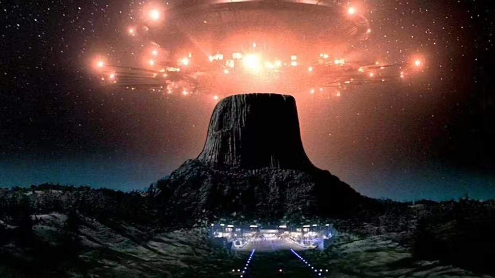
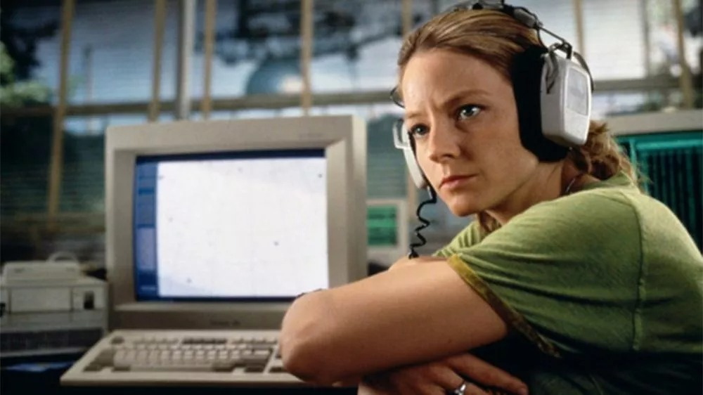
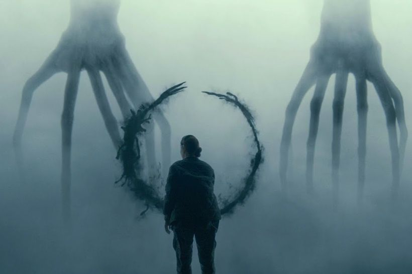

Antes de que ningún gobierno abriera un archivo, antes de que ningún whistleblower testificara ante el Congreso, antes de que la palabra «UAP» reemplazara a «OVNI» en el vocabulario oficial — Hollywood ya había construido el guión. Sabemos cómo se verá el Primer Contacto: habrá una nave, habrá miedo, habrá un momento de silencio absoluto antes de que algo se mueva. Sabemos todo eso porque lo hemos visto cientos de veces.
Esta es la historia de cómo el cine de ciencia ficción no solo entretuvo — sino que literalmente programó las expectativas de miles de millones de personas sobre cómo sería el encuentro con una inteligencia no humana. Y ahora, mientras los gobiernos del mundo empiezan a admitir que «hay algo ahí», la pregunta se vuelve urgente: ¿lo que esperamos encontrar es real, o es un guión que alguien escribió en Hollywood hace décadas?
«La mitad de mis amigos han visto ovnis o fenómenos aéreos no identificados. ¿Por qué yo no he visto nada?»
— Steven Spielberg · Entrevista promocional, Disclosure Day · Junio 2026La cronología completa
Más de cien años de imaginario extraterrestre en el cine. Aquí, las películas que han moldeado el mito — agrupadas por época y marcadas según su relevancia para el debate del «Primer Contacto».
Le Voyage dans la Lune
Georges Mélies. Primera representación cinematográfica de un «alien» — los selenitas. El contacto como aventura burlesca.
The Day the Earth Stood Still
Robert Wise. Klaatu viene en paz. El alien como mensajero moral — plantilla del contacto diplomático que define décadas.
The War of the Worlds
Byron Haskin / H.G. Wells. La invasión como pesadilla atómica. Visión hostil del contacto, muy influyente.
Forbidden Planet
Primer sci-fi de gran presupuesto. Introduce la idea de civilizaciones extraterrestres extintas con tecnología superior.
2001: A Space Odyssey
Stanley Kubrick. El monolito como alien sin forma — el contacto como transformación evolutiva. La más influyente de la historia.
Encuentros en la Tercera Fase
Steven Spielberg. El contacto como experiencia mística — elegidos civiles, gobierno que oculta, comunicación matemática.
Alien
Ridley Scott. El alien como horror puro — sin diálogo posible, sin empatía. Polo opuesto del contacto cooperativo.
E.T. The Extra-Terrestrial
Spielberg. El alien como amigo íntimo — relación personal con el «otro». El niño como puente entre mundos.
Starman
John Carpenter. El alien estudia la humanidad tomando forma humana. El gobierno como amenaza real al contacto.
Cocoon
Ron Howard. Aliens benignos en secreto — operan sin revelarse al mundo. La ocultación como compasión.
They Live
John Carpenter. Los aliens ya están aquí, camuflados, controlando la sociedad. La película más conspirativa del catálogo.
Stargate
Roland Emmerich. Viaje interestelar a través de puertas. Aliens como dioses del antiguo Egipto — el mito antiguo como contacto real.
Independence Day
Emmerich. La invasión como blockbuster. El gobierno tiene naves en el Área 51 — explícitamente. El encubrimiento es real.
Contact
Robert Zemeckis / Carl Sagan. El contacto como proceso científico real — frecuencias, mensajes, construcción de dispositivo. La más rigurosa.
Men in Black
Barry Sonnenfeld. Los aliens ya conviven con nosotros — el gobierno lo sabe y lo gestiona. El secreto como normalidad burocrática.
The Sixth Day / Galaxy Quest
El contacto como comedia y como thriller de clonación. La década termina jugando con los códigos del género.
La Guerra de los Mundos
Spielberg. Reboot de la clásica invasión — el alien como terror absoluto, sin negociación posible. Lectura post-9/11.
The Day the Earth Stood Still (remake)
Scott Derrickson. El mensajero regresa — esta vez el alien evalúa si la humanidad merece sobrevivir al cambio climático.
District 9
Neill Blomkamp. Los refugiados alienígenas como alegoría del apartheid. El contacto ya sucedió — y fue una catástrofe humanitaria.
Super 8
J.J. Abrams / Spielberg. El alien perdido y asustado — el niño como empatía. Tributo a la era de los 80.
Oblivion / Europa Report
El alien como misterio irreconocible. La ciencia ficción se vuelve filosófica y ambigua.
La Llegada (Arrival)
Denis Villeneuve / Ted Chiang. El contacto como problema lingüístico y filosófico — el alien como reformulación del tiempo.
The Tomorrow War
Chris McKay. El futuro viene al presente a advertir de una invasión alienígena inminente. El tiempo como arma.
Nope
Jordan Peele. El alien como depredador incomprensible — el espectáculo y el trauma. El OVNI como trauma colectivo americano.
Alien: Romulus
Fede Álvarez. Retorno al terror original. El alien como biología incontrolable, el contacto como extinción.
Disclosure Day (El Día de la Revelación)
Steven Spielberg / Emily Blunt. El gobierno revela la existencia de aliens a 7 mil millones de personas. El estreno más esperado del verano.

Las películas que lo hicieron en serio
No todas las películas alienígenas son iguales. Algunas simplemente usan el alien como monstruo o como arma de acción. Pero hay un grupo pequeño — las que merecen el nombre de «Primer Contacto» — que intentó algo más difícil: imaginar qué significaría realmente encontrarse con una inteligencia no humana. Estas son las que moldearon el debate público.
1977
Encuentros en la Tercera Fase
Steven Spielberg
La plantilla fundacional. Un civil elegido (Richard Dreyfuss) es «llamado» por una señal que solo él percibe. El gobierno lo sabe todo, lo oculta todo, y al final orquesta el encuentro en secreto. La comunicación se hace por frecuencias musicales. El alien, benigno.
Por qué importa: Estableció la estructura que todas las demás replican — el elegido, el encubrimiento, la revelación final.
1997
Contact
Robert Zemeckis / Carl Sagan
Basada en la novela de Carl Sagan. Una astrónoma del SETI capta una señal real — instrucciones para construir una máquina. El contacto es un proceso científico, racional, lento. El alien no aparece como tal: solo hay una experiencia y un mensaje.
Por qué importa: La más científicamente rigurosa. Plantea el contacto como problema institucional, político y filosófico simultáneamente.
2009
District 9
Neill Blomkamp
El contacto ya ocurrió — y nadie sabe qué hacer. Una nave varada sobre Johannesburgo. Los aliens (llamados «gambas») son refugiados hambrientos, no conquistadores. La humanidad les asigna un campo de concentración. El gobierno los explota.
Por qué importa: La única película que plantea el contacto como crisis de derechos humanos — no como evento maravilloso sino como fracaso moral.
2016
La Llegada (Arrival)
Denis Villeneuve
Doce naves aparecen simultáneamente en el mundo. Una lingüista (Amy Adams) es elegida para comunicarse. El lenguaje alien modifica la percepción del tiempo. El mensaje no es un ultimátum sino una herramienta para el futuro de la humanidad.
Por qué importa: Reinventó completamente el lenguaje visual del género. El alien como experiencia cognitiva, no física.
1984
Starman
John Carpenter
Un alien toma la forma de un hombre para estudiar la humanidad. El gobierno lo persigue. La mujer del hombre original lo protege. El alien aprende empatía humana — y deja evidencia de su existencia antes de irse.
Por qué importa: El alien como espejo empático. El gobierno como obstáculo, no como aliado, en el proceso de contacto.
2022
Nope
Jordan Peele
Una familia de rancheros en California descubre que su «nube» es un organismo alienígena depredador. No hay comunicación posible — el alien no reconoce la humanidad como interlocutor. El contacto como trauma.
Por qué importa: Rompe el optimismo del género. El alien como pura alteridad incomprensible — lo más honesto sobre nuestra real ignorancia.

El regreso de Spielberg: Disclosure Day
// Estreno · 12 Junio 2026 · Universal Pictures · IMAX
El Día de la Revelación (Disclosure Day)
Cincuenta años después de Encuentros en la Tercera Fase, Spielberg regresa al tema que lo definió. Esta vez la premisa es radicalmente diferente: no se trata de descubrir que los aliens existen — se trata de lo que pasa cuando el gobierno lo confiesa públicamente. El logline oficial lo dice todo: «Si descubrieras que no estamos solos, si alguien te lo mostrara, te lo demostrara, ¿te asustarías?»
La película sigue a una presentadora de televisión (Emily Blunt) que sufre un episodio extraño en directo — el detonante de una cadena de revelaciones que lleva a la humanidad al umbral de la verdad. El reparto coral incluye Josh O'Connor, Colin Firth, Eve Hewson y Colman Domingo.
El timing no es casual. Spielberg ha seguido de cerca las desclasificaciones de la UAP PURSUE. En entrevistas ha reconocido que la película nació de observar «cómo el mundo ha empezado a tratar el tema como algo real». El guionista David Koepp — que colaboró con Spielberg en Jurassic Park y La Guerra de los Mundos — ha descrito el proyecto como «la respuesta ficción a lo que el gobierno acaba de admitir».
cooperativo
Distribución por tipo de narrativa · Cine alienígena 1951–2026
El 38% de las películas de contacto alienígena presentan a los extraterrestres como amenaza o fuente de horror. Solo el 24% los muestra como interlocutores potenciales con quienes el contacto cooperativo es posible. Este desequilibrio ha moldeado profundamente la intuición colectiva: nuestra primera reacción ante lo desconocido tiende al miedo, no a la curiosidad.
Alien, Predator, La Guerra de los Mundos, Independence Day, Nope, A Quiet Place…
E.T., Contact, La Llegada, Encuentros en la 3ª Fase, The Day the Earth Stood Still…
Edge of Tomorrow, Starship Troopers, The Tomorrow War, Battleship…
Men in Black, Galaxy Quest, Paul, Mars Attacks!, My Stepmother Is an Alien…
2001, District 9, Solaris, Annihilation, Starman, Contact…
// Comentarios